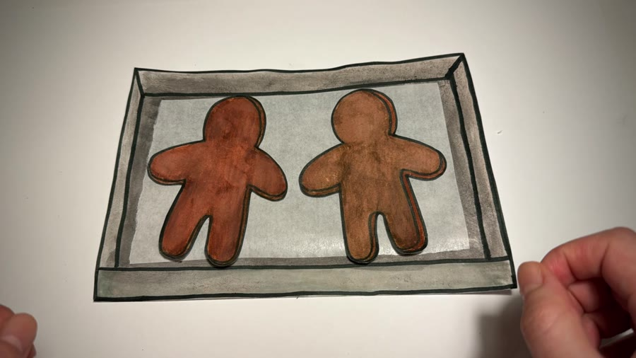

The line
Dark outlines give the separate drawings a shared visual language.
PAPER CUTOUTS
Gingerbread Men
A pinch of imagination.
A mountain of paper.
One tiny movement at a time.
Drag to turn
01 / FRESH FROM THE PAPER OVEN
Every ingredient, utensil and cookie is hand-drawn, cut out and animated frame by frame. Here is the finished paper kitchen in motion.
02 / THE SPACE BETWEEN FRAMES
Pull the slider. Watch a tiny change become a sequence. This study uses 24 images sampled from the finished film.

FRAME 01 / 2403 / BEFORE THE FIRST FRAME
The drawn edges stay visible. So do the marker strokes, the cut shapes and the hands behind the illusion. The making is part of the charm.
Dark outlines give the separate drawings a shared visual language.
Paper edges and marker texture keep the handmade quality in view.
Repositioning objects between images turns a tabletop into a story.
A SMALL CAST. A LOT OF PATIENCE.